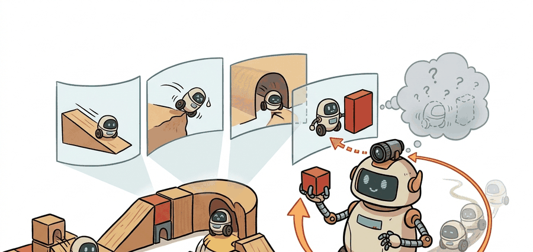

Section 39.3: Video generation as world simulation: Sora and successors
"Photorealism is evidence of structure, not proof of control reliability. For embodied work, intervention is the real exam."

Figure 39.3A: The opener illustration frames video generation as world simulation: sora and successors as a closed-loop problem: a prediction is valuable only if it changes action selection and survives contact with reality.
A Video Model That Starts To Behave Like Physics
Big Picture
Sora pushed the idea that large video models can acquire simulation-like structure. The key question for embodied AI is how much of that structure survives when the model is asked to support action and decision-making rather than passive viewing.
Builder Route
Follow the distinction between physical-looking coherence and control-relevant coherence. The section is not about whether the clips are visually striking, but whether the learned dynamics resemble a world you could actually plan in.
Key Insight
Photorealism is evidence of structure, not proof of control reliability. For embodied work, intervention is the real exam.
Problem First
Scaled video generation can model cameras, objects, and motion with surprising realism, but agents do not need beautiful movies, they need futures that remain causally trustworthy when actions intervene. This section exists to sort out what is genuinely useful in the Sora-style framing and what still falls short for embodied control.
Core Model
The Sora report popularized the phrase “video generation models as world simulators.” The intuition is that predicting long coherent video forces the model to internalize structure about objects, geometry, and motion. At a high level, the generator learns a conditional distribution over future frames:
$$p(o_{t+1:t+H} \mid o_{\le t}, c),$$
where $c$ may include text or image context.
For embodied AI, however, one more argument is required: the latent geometry learned for passive generation must remain useful under intervention. That missing action channel is why Sora-style models are best viewed as evidence that large video models can encode world regularities, not as immediate replacements for explicit action-conditioned simulators.
The right scientific reading is therefore cautious. Photorealism can signal that the model has learned some structure of the world, but it can also mislead the reader into overestimating causal faithfulness. Real simulation requires identity persistence, controllability, and task validity under action.
Successor Test
Take a visually compelling video world model, inject action or control signals if available, then measure whether the model preserves object identities and task outcomes over a long horizon. If not, treat it as a rich prior for synthetic scenes, not as a policy-training simulator.
Minimal Probe
The following diagnostic checks whether one object keeps the same identity across a short generated clip. That sounds simple, but it is exactly where photorealistic video models can look plausible while silently losing the world state a planner needs.
# Audit object identity persistence across generated frames.
# A simulator fails if objects silently change identity mid-rollout.
object_ids = ["forklift", "forklift", "forklift", "unknown", "forklift"]
persistent = sum(obj == "forklift" for obj in object_ids) / len(object_ids)
first_break = next(i for i, obj in enumerate(object_ids) if obj != "forklift")
print({"persistence_rate": round(persistent, 2), "first_break_frame": first_break})
{'persistence_rate': 0.8, 'first_break_frame': 3}
Expected behavior: The failure at frame 3 is the meaningful result. The clip can still look globally coherent, but if the object identity breaks that early, any planner using the clip as a simulated future would be reasoning over the wrong state.
Code Fragment 1: This identity audit illustrates why visual smoothness is not enough. A single mid-rollout identity failure can invalidate the entire future for planning, evaluation, or synthetic-data generation.
Library Shortcut
The diagnostic itself is tiny, but the practical shortcut for experimenting with video-model backbones is the diffusers ecosystem, which can reduce a custom sampler to a few lines while handling schedulers, device placement, and checkpoint loading internally. That does not make the result a simulator by itself, but it does make controlled evaluation of successor models much easier.
Practical Recipe
Use photorealistic video models first as synthetic-scene priors or evaluation stressors, not automatically as full control simulators.
Measure object identity and event persistence over time, because those failures often appear before gross visual collapse.
If an action channel exists, test counterfactual prompts or control signals that should produce sharply different futures.
Keep a clear note in reports separating vendor-reported visual capability from independently measured simulator capability.
Warning
Do not promote a passive video model to a control simulator just because the clip looks physically plausible. Without action-grounded evidence, the safest claim is still limited.
Practical Example
A humanoid policy team might use a Sora-like model to generate rare recovery scenes, such as slippery floors or falling objects, then evaluate whether perception modules remain robust. That is already useful. It is still different from claiming the model can replace contact-accurate control simulation for training the whole policy.
Research Frontier
The frontier around Sora-style systems is hybridization: combine rich visual generation with stronger action conditioning, structured control interfaces, or external physics constraints. The open question is whether that route can preserve photorealism while gaining the causal reliability required by embodied policies.
Cross-Reference Thread
For diffusion-based action generation, revisit Chapter 22. For synthetic evaluation and domain randomization, connect to Chapter 13. For the stricter evaluation checklist, continue to Section 39.7.
The reason Sora matters in this book is not that every robotics team should use it directly. It matters because it changed the prior about what large video models can internalize: geometry, continuity, and multi-object interaction may emerge to a meaningful degree under pure generative training.
The embodied systems lesson is more conservative. Emergent structure is promising, but agents need explicit contracts. Until action, persistence, and task validity are measured together, the right role for these models is often augmentation, analysis, or synthetic stress testing rather than closed-loop policy training.
Self Check
What is the strongest useful claim you would allow a Sora-style model to make in an embodied pipeline today, and what stronger claim would still require action-conditioned evidence?
Key Takeaway
Photorealistic video can be evidence of learned world structure, but it becomes a usable simulator only when that structure remains stable under intervention and task evaluation.
Exercise 39.3.1
Write two different capability claims for a Sora-like model: one claim you would accept after visual inspection plus persistence tests, and one stronger claim you would refuse without action-conditioned transfer evidence.